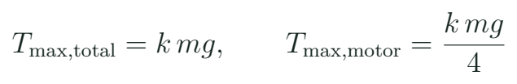
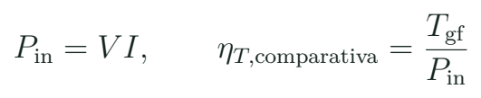
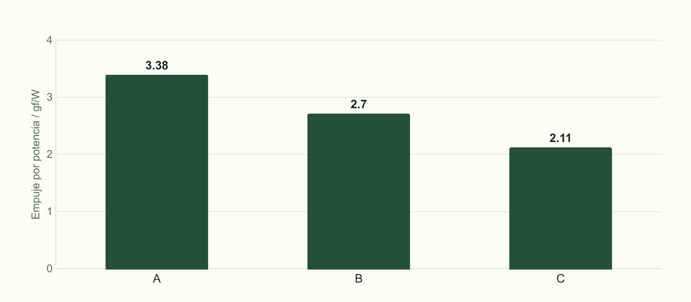
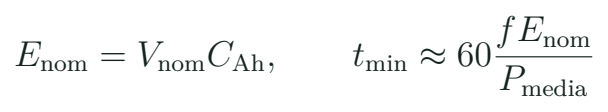
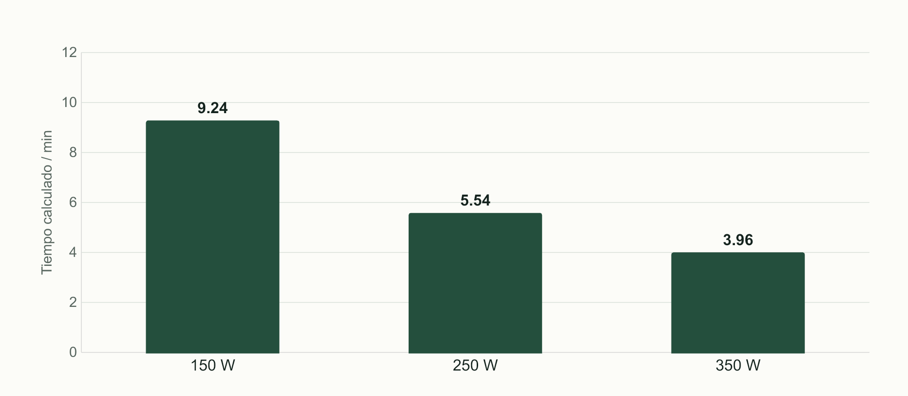

Seleccionar motor, hélice, ESC y batería con criterio
Justificar una cadena de propulsión compatible mediante masa, empuje, corriente y energía.
El conjunto se selecciona como una cadena
El motor no produce una cifra única de empuje. La tabla de ensayo debe identificar hélice, tensión, corriente y condiciones. Cambiar una de esas condiciones modifica la carga. El ESC debe admitir la alimentación y el esfuerzo eléctrico y térmico del conjunto; la batería y sus conexiones deben sostener la demanda prevista. La selección funciona de fuera hacia dentro: misión y masa, hélice que cabe, combinación ensayada, alimentación y control compatibles.
Datos que deben viajar juntos
| Elemento | Dato necesario | Error frecuente |
|---|---|---|
| Motor | Tamaño, KV, tabla y límites | Elegir solo por KV |
| Hélice | Diámetro, paso, palas y sentido | Usar solo diámetro |
| ESC | Tensión, corriente y protocolo | Tomar ráfaga como continua |
| Batería | Química, S, capacidad y masa | Suponer que más mAh siempre ayuda |
KV aproxima la velocidad sin carga por voltio bajo una convención del motor. No es una unidad de potencia ni una promesa del régimen con hélice. El tamaño del estator y la construcción también importan. El paso de hélice describe una geometría; tampoco garantiza una velocidad de avance del dron. Estas cifras permiten comparar fichas, pero la selección debe volver a una prueba de la combinación real.
Para los tres equipos de MECRO se utilizará la misma plantilla. Una ficha de 5 pulgadas no se escala multiplicando todas sus cifras por 12/5. La alimentación, el soporte, el empuje y el espacio cambian de forma distinta.
Un presupuesto de empuje que se puede explicar
Primero se estima la masa de despegue con todos los componentes. Después se define una relación de empuje máximo a peso como hipótesis de diseño. En aula usaremos 2 para aprender el método. Esa cifra no es una ley universal ni una garantía de vuelo: la misión, las condiciones y la respuesta del vehículo requieren su propia justificación.

Quad de 800 g del ejercicio
Con cuatro motores y k = 2, ¿qué empuje máximo por motor buscamos en la tabla?
Ver razonamiento del caso
El objetivo total es 1600 gf y por motor 400 gf. En estacionario ideal corresponde aproximadamente a 200 gf por motor. 400 gf equivalen aproximadamente a 3,92 N. Son objetivos de selección del caso, no medidas de un equipo MECRO.
La reserva permite distinguir la condición de sostenerse de la capacidad de cambiar el movimiento. No basta con que la tabla alcance 400 gf una sola vez: importa cómo se obtuvo, durante cuánto tiempo y con qué consumo y temperatura. Además, el peso final puede ser mayor que la estimación. Una revisión del presupuesto evita que la batería y los soportes aparezcan al final como masa sorpresa.
Cómo leer una tabla de ensayo
Tabla sintética para aprender la comparación
| Caso a 22,2 V | Empuje / gf | Corriente / A |
|---|---|---|
| A · combinación de aula | 450 | 6 |
| B · combinación de aula | 600 | 10 |
| C · combinación de aula | 750 | 16 |
Estas filas son datos didácticos y no recomiendan un producto. Cada una representa una combinación diferente bajo una tensión declarada. Si el requisito cambia a 500 gf, A no alcanza el objetivo mostrado; B y C sí lo alcanzan. Esa primera selección todavía no compara masa, régimen térmico, dimensiones y disponibilidad. El componente con más empuje máximo no es automáticamente la mejor elección.

B frente a C
¿Qué potencia eléctrica y qué gf/W resultan de las filas B y C?
Ver razonamiento del caso
B: 22,2 × 10 = 222 W y 600/222 ≈ 2,70 gf/W. C: 22,2 × 16 = 355,2 W y 750/355,2 ≈ 2,11 gf/W. La comparación exige conservar condiciones; no describe por sí sola todo el rango de operación.
Investiga dónde publicó el fabricante el ensayo y anota su referencia. Si una tienda solo muestra una cifra de empuje sin hélice o tensión, el expediente conserva esa ausencia y busca el dato primario.

Energía y autonomía estimada
La capacidad en Ah expresa carga eléctrica; al multiplicarla por una tensión nominal obtenemos una aproximación de energía en Wh. La energía aprovechable depende de condiciones de uso. Para el ejercicio reservamos 20 % y suponemos potencia media constante. Es un modelo transparente para comparar, no una predicción validada de tiempo de vuelo. La tensión cambia bajo carga y la masa de otra batería también cambia la demanda.

Batería del ejercicio
Una batería convencional 6S de 1,3 Ah tiene tensión nominal aproximada de 22,2 V. Con f = 0,8 y 250 W medios, ¿qué tiempo arroja el modelo?
Ver razonamiento del caso
La energía nominal es 28,86 Wh; la fracción del ejercicio es 23,088 Wh. El tiempo resulta 60 × 23,088 / 250 ≈ 5,54 min. A 150 W serían 9,24 min; a 350 W, 3,96 min. Son escenarios calculados.
S indica celdas en serie; no todas las químicas tienen la misma tensión por celda. Para una LiPo convencional se distingue nominal de plena carga, y se consulta el paquete real. La cifra C comercial tampoco elimina la necesidad de comprobar corriente, temperatura, conectores y caída de tensión del conjunto.

Laboratorio de selección y descarte
- Completa la masa prevista del caso y nombra las estimaciones.
- Declara una relación empuje/peso y calcula objetivo por motor con unidades.
- Busca una ficha primaria de motor con la hélice y tensión identificadas. No extrapoles una fila incompleta.
- Comprueba ESC, batería, conector y regulador contra la alimentación y corriente previstas.
- Compara dos alternativas: cuál cumple, cuál se descarta y qué dato falta.
- Calcula una autonomía de escenario con potencia media declarada y explica sus límites.
- Entrega la lista con modelo, revisión, cantidad y fuente; deja el precio separado de la compatibilidad.
El docente resuelve primero el caso sintético. Después muestra cómo se identifica la condición en una tabla de fabricante del motor que realmente posee. Los estudiantes sin hardware pueden completar la decisión documental. El resultado no es una compra automática: es un argumento revisable que diferencia la evidencia disponible de lo que falta confirmar en banco.
Si se consulta un precio, se registra fecha, moneda y contenido del conjunto. Un motor suelto y una combinación con ESC no son ofertas equivalentes. El precio no debe ocultar la revisión de tensión o montaje. Este paquete no fija precios actuales de componentes.
La compra que queda justificada
Antes de cerrar una combinación
| Pregunta | Qué conserva el expediente |
|---|---|
| ¿Cabe y se monta? | Plano, eje y tornillería |
| ¿Alcanza el objetivo? | Fila de ensayo y cálculo |
| ¿Admite la energía? | Tensión máxima y demanda |
| ¿Se puede configurar? | Protocolo y target |
| ¿Qué queda pendiente? | Prueba concreta o dato primario |
Un error útil de clase consiste en proponer un motor aparentemente correcto con una tensión de ensayo distinta de la batería elegida. El alumno debe detectar que comparar números sin sus condiciones no resuelve la selección. Otro consiste en aumentar capacidad sin actualizar masa. Ambas situaciones enseñan a mantener coherente la lista completa.
Para ampliar, compara cómo cambian diámetro y paso dentro de una misma familia de hélices y busca la tabla correspondiente del fabricante. No se pide ensayar hélices en una mesa abierta. El trabajo inicial consiste en interpretar documentación y preparar el banco docente adecuado. En la siguiente sesión construiremos el mapa de alimentación que une las piezas seleccionadas.
Práctica guiada
- Resolver el presupuesto de 800 g antes de abrir una tienda.
- Comparar las tres filas sintéticas con unidades y condiciones.
- Calcular energía y tres escenarios de potencia media.
- Revisar una combinación propuesta y un descarte argumentado.
Preguntas de cierre
¿KV indica potencia del motor?
No. Relaciona régimen sin carga y tensión bajo su convención; falta el conjunto y su ensayo.
¿C comercial sustituye comprobar corriente y conexiones?
No. El conjunto necesita límites y evidencia bajo condiciones reales.
¿Duplicar mAh duplica siempre el tiempo?
No. Cambian masa, demanda y condiciones; hay que revisar el modelo y medir.
Entrega
Lista de componentes justificada, presupuesto de masa/empuje y escenario de energía.
Fuentes para ampliar
[AP] ArduPilot. Copter: First Time Setup.
[MOTORS] Betaflight. Motors Tab.
[LIPO] Tattu / Gens Ace. Manual de baterías UAV y manejo del paquete.
[VOLT] Adafruit. Li-Ion & LiPoly Batteries: Voltages.
[BOOK] Beard y McLain. Small Unmanned Aircraft: Theory and Practice, Princeton University Press, 2012; referencia de profundización en dinámica y control.